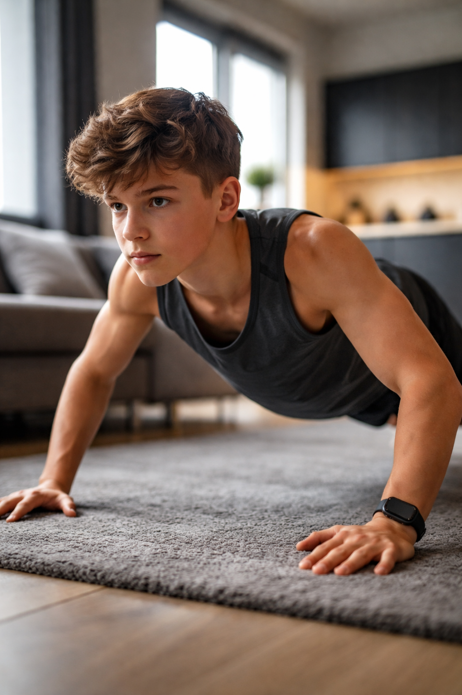
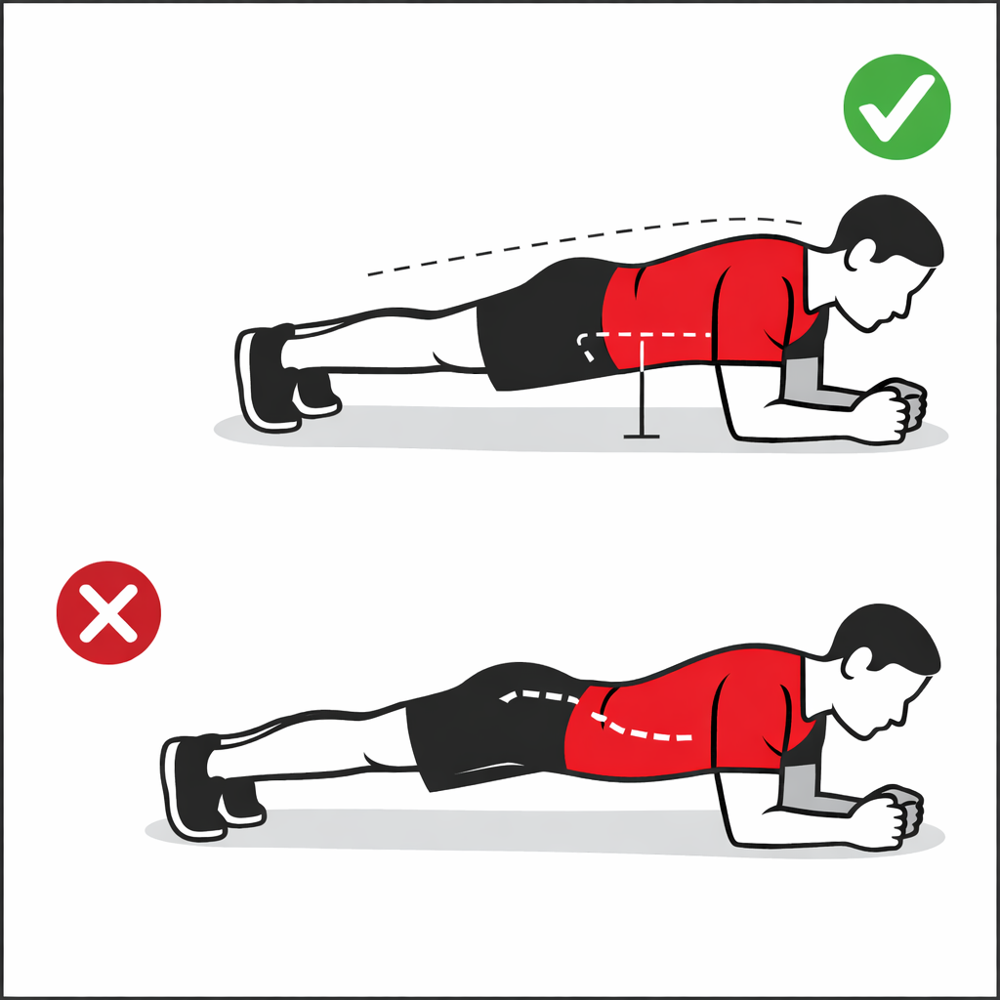

Физическое здоровье
Тренировки укрепляют мышцы, связки и кости, развивают силу, выносливость и помогают улучшать осанку.
Тренировки без тренажёров. Только ты и гравитация.
Калистеника — это система тренировок с собственным весом. Она помогает развивать силу, координацию, выносливость, гибкость и умение лучше контролировать своё тело.
Сколько раз ты сделаешь отжимания за 60 секунд?
Это ориентировочная оценка, которая помогает понять свой стартовый уровень подготовки.
Калистеника — это силовая подготовка, в которой основная нагрузка создаётся собственным весом тела. Такие тренировки известны с древних времён. Упражнения с весом собственного тела использовались для подготовки воинов, атлетов и позже стали частью школьной физической подготовки.

Тренировки укрепляют мышцы, связки и кости, развивают силу, выносливость и помогают улучшать осанку.
Физическая активность улучшает внимание, память, концентрацию и помогает лучше усваивать новую информацию.
Спорт помогает снижать стресс, улучшает настроение и поддерживает эмоциональную устойчивость.
Регулярные тренировки формируют самодисциплину, ответственность и привычку к активному образу жизни.
Подходит тем, кто только начинает заниматься и осваивает базовые движения.
Подходит тем, кто уже освоил базу и готов переходить к более сложным упражнениям.
Подходит тем, кто обладает хорошей силой, координацией и уверенно контролирует тело.
Видео по теме: Калистеника для начинающих

Этот план подходит новичкам. Тренировки проводятся 3 раза в неделю. Между подходами отдых — 60–90 секунд.
| День | Упражнения | Подходы × Повторы |
|---|---|---|
| Тренировка A | Приседания, планка на предплечьях, отжимания от опоры | 3×12–15, 3×20–40 с, 3×6–10 |
| Тренировка B | Выпады, ягодичный мост, подтягивания с резинкой или тяга | 3×8–10 на каждую ногу, 3×12–15, 3×5–8 |
| Тренировка C | Приседания, планка, узкие отжимания от опоры | 3×12–15, 3×20–40 с, 3×6–10 |
Главное: начинать с простого, соблюдать технику и увеличивать нагрузку постепенно.
Вернуться наверхВо время сна организм восстанавливается, а мышцы получают возможность расти и укрепляться.
Для восстановления нужны вода, белок, сложные углеводы, овощи и фрукты.
Спокойная прогулка или лёгкая разминка помогают улучшить кровообращение и уменьшить скованность мышц.
Не стоит перегружать одну и ту же мышечную группу каждый день. Мышцам нужно время на восстановление.